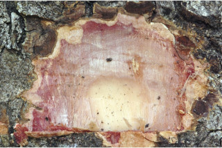
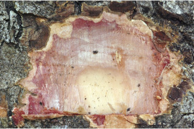

Images :
 



| Habit : | Trees up to 35 m tall. |
| Leaves : | Leaves compound , imparipinnate , alternate , distichous ; stipules caducous ; rachis pulvinate , terete , 6-10 cm long; petiolule 0.3-0.7 cm long, with short, subulate gland like structure at the base of terminal leaflet ; leaflets 4-7, alternate , lamina 4.5-9 x 1.7-4.5 cm, asymmetric-falcate or narrow ovate-elliptic to narrow oblong , apex caudate - acuminate , base rounded or acute , margin entire , chartaceous , obscurely pellucid punctate ; midrib slightly raised; secondary_nerves ca. 10 pairs; tertiary_nerves reticulate . |
| Inflorescence / Flower : | Inflorescence panicled racemes ; flowers small, numerous , white. |
| Fruit and Seed : | Pod , ellipsoid or oblong to 3.5 x 3 cm, flattened towards pedicel , beaked , coriaceous ; seed solitary , compressed. |